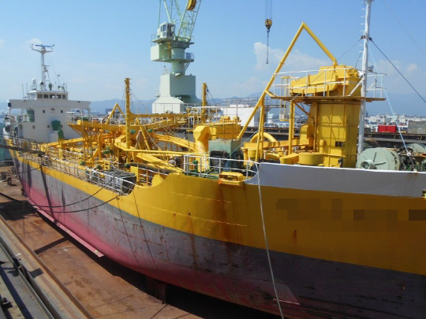

1,700 DWT 698 GRT Cement Carrier Blt 1990 Jp
/ informed by BLUE MARINE CO., LTD.
(18-273)

-
BUILT
:
SEPT. 9, 1990, WAKAMATSU ZOSEN CO LTD., JAPAN
- FLAG/CLASS
:
JAPAN / JG COASTAL
- LOA/L/B/D
:
70.0 / 65.0 / 11.5 / 5.10 M
- DWT/draft
:
1,700 T / 4.55 M
- GRT/DISPLACEMENT : 698 T / 1129.61T
- MAIN ENGINE
:
AKASAKA K28SFD, 1,000ps X 350rpm X 1set
- AUX ENGINE
:
SHOWA SEIKI, 6HAL-HTN, 180ps X 1,200rpm X 1set
- SPEED
:
12kt
- LOADING
:
MECHANICAL AIR SLIDE CONVEYOR, 900 m³
- UNLOADING
:
PNEUMATIC 340 m³
- CREW COMPLEMENT : 8 P
- LAST/NEXT SS : OCT. 16, 2013 / OCT. 22, 2018
- LOCATION
:
TRADING IN JAPAN
- DELIVERY
:
END OF AUGUST ~ EARLY OF SEPT., 2018.
Information History
- 180327 ~ 180717 : She is available for sale.